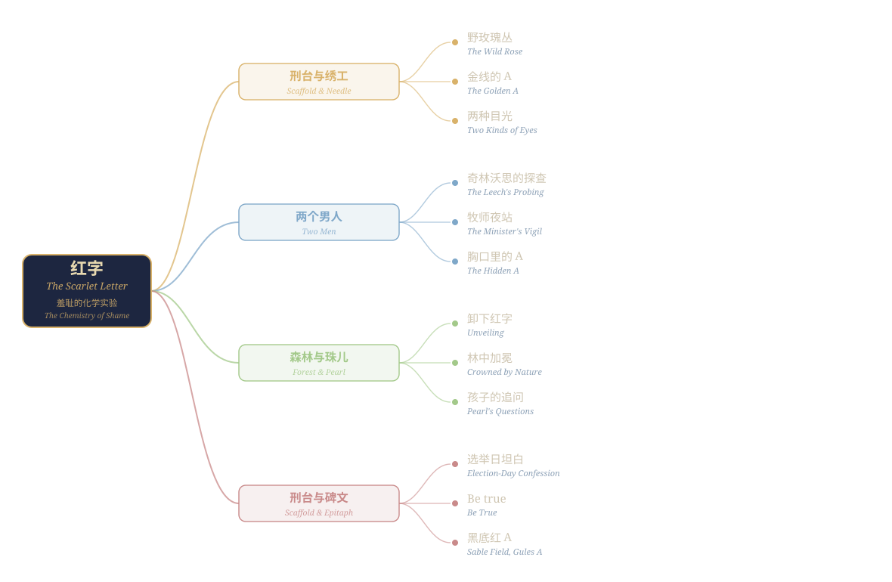

红字
〇 · 书籍信息
基本信息
| 书名 | 《红字》（The Scarlet Letter）——通奸者胸前的字母 A（Adultery）：一座监狱与一片墓地之间，殖民当局给赫斯特留了三尺示众之地——刑具不是铁做的，是一针一线绣出来的 |
|---|---|
| 作者 | 霍桑（1804–1864）：祖上有人做过塞勒姆驱巫案的法官，他为自己姓氏里的罪感写了一辈子——序言《海关》里说，旧居楼上的三个房间是他「抵达文学的路径」 |
| 结构 | 序言（海关）+ 24 章：刑台三次出现构成全书的骨架（赫斯特示众 / 狄姆斯代尔夜站 / 清算之日）——同一个刑台，三次使用，三种罪人 |
| 体裁 | 心理罗曼司（romance）：霍桑坚持不叫小说（novel）——他要在「现实与幻境之间的中立地带」写作；寓言与人物同床共枕 |
| 一句话 | 三个人共享一桩罪：她把它戴在胸口，他把它缝进心脏，他把它别在脸上——羞耻的重量相同，佩戴方式不同；最后戴得最少的人死得最快。 |
一 · 核心主题总览
一个字母的十几种读法背后埋着四组母题：① 羞耻的三种佩戴（全书引擎）
赫斯特——戴在胸口，全城可见；狄姆斯代尔——藏进身体，以手抚胸；奇林沃思——写进人格，面容渐变。霍桑的实验设计：同一份罪，三种掩体，三种结局——佩戴最少者（牧师）耗损最快。
② 女性的处境与翻转
开篇赫斯特是刑台上的罪妇；到第十三章她已成镇上居民的「姊妹与救助者」——A 在众人眼里从 Adultery 变成 Able。霍桑写下十九世纪最锋利的一句话：「整个社会制度都被打倒、彻底重构，才能在人性与 womanhood 之间重建公平」。
③ 罪与知的等价
霍桑的总判词藏在第二十七章叙述者的叹息里：「做真实的人！做真实的人！」——哪怕不把最坏的示人，也要露出一点能让人推断出最坏的痕迹。赫斯特因罪而获得别人没有的知识（「别因金丝线的圣袍就看轻她」），牧师因隐瞒而失知于世。
④ 自然与律法
森林是律法的反面：狄姆斯代尔与赫斯特只有在林中才能卸下面具；珠儿——「自然的孩子」——在城里被斥为妖，在林中被花叶加冕。清教的波士顿不懂的语法，野玫瑰丛第一节就示范了。
二 · 第一段 刑台与绣工—— 监狱 · 野玫瑰 · A 字 ——
监狱、墓地与野玫瑰丛
第一章像寓言开箱：一簇奠基者建的监狱与墓地（「文明的第一批建筑」），门前的野玫瑰丛「以它天然的芬芳献给戴罪而来的囚徒」。霍桑用植物写出了全书第一句判词：律法冷却的地方，自然坚持开花。写作课直接受益：宏大主题先给一个开在门口的小东西。
◆ 语言学习 · 开篇 · 寓言
| condemned /kənˈdemd/ | adj. 被判罪的 —— 例句：the condemned criminal（狱门段）。condemn v. 判罪+谴责一词两用 |
|---|---|
| fledgling /ˈfledʒlɪŋ/ | n. 雏鸟，新生者 —— 例句：a fledgling civilization（殖民初建）。比喻词：刚长羽毛的鸟 |
| blossom /ˈblɒsəm/ | n. 花，开花 —— 例句：the wild rose-bush（门前植物）。in blossom「开花中」；开篇的道德counter词 |
| emblem /ˈembləm/ | n. 象征，徽记 —— 例句：an emblem of the deep heart's core（红字定性）。霍桑高频词：万物皆 emblem |
句型 ｜ 「…but on one side of the portal, and rooted almost at the threshold, was a wild rose-bush… which it may hope to symbolize some sweet moral blossom.」——破折号长链 + 道德收束：霍桑句子像拱门，主语延迟出现，花才开得响。长句的心法：每个逗号是一个门厅，读者穿过门厅才见到主语。
示众与金线的 A
赫斯特抱着三个月的珠儿站上刑台：她把 A 绣得金光灿烂、工艺精美——羞耻被她做成勋章，这是全书第一次以刺绣完成的反抗。围观妇女主张烙铁与绞刑；年老的旁观者却说：「这么聪明一个女人，会来这儿，可见她的心有多深。」——刑台上的两种目光，是全书所有目光的预演。
◆ 语言学习 · 示众 · 绣艺
| ignominy /ˈɪɡnəmɪni/ | n. 公开羞辱 —— 例句：her ignominy（刑台定性）。高级羞辱词：ignominious adj.；与 shame 辨析：ignominy 带「公开展出」义 |
|---|---|
| specimen /ˈspesɪmən/ | n. 标本，展品 —— 例句：a specimen of her needlework（围观者话语）。示众=把人做成标本 |
| gesticulation? →(改) ostentatious /ˌɒstenˈteɪʃəs/ | adj. 炫耀的 —— 例句：her ostentatious letter（金线 A）。ostensibly adv.「表面上」词族 |
| stigma? →(改) forbear? →(改) gallows /ˈɡæləʊz/ | n. 绞架 —— 围观妇女的量刑提议：霍桑让台词替代叙述完成社会批评 |
习语 ｜ display her ignominy 展示她的耻辱——刑台的功能动词；needlework as armour 针线作铠甲——赫斯特的反抗语法：社会给她刑具，她把刑具改成作品。
三 · 第二段 两个男人—— 医生 · 牧师 · 私仇 ——
奇林沃思：以医术为名的复仇
失踪两年的老丈夫抵达刑台边缘，改名换姓（罗杰·奇林沃思）做起医生，以「照顾牧师健康」为名住进同一屋檐。霍桑给他的判词：一个人一旦把毕生才华只用于钻探另一个人的心脏，他自己的心就先被钻空——医生这张脸越看越像「魔鬼的代理人」，连镇民都这么说。
◆ 语言学习 · 复仇 · 探察
| probe /prəʊb/ | v./n. 探查 —— 例句：probe the minister's heart（奇林沃思的营生）。medical probe 探针；一词的两界 |
|---|---|
| avenger? →(改) vengeance /ˈvendʒəns/ | n. 复仇 —— 例句：leave vengeance to God（圣经训诫 vs 奇林沃思的违约）。avenge v.；复仇=越权的祷告 |
| leech /liːtʃ/ | n. 医蛭；医生（旧称）—— 章节名「The Leech」：蛭=吸食者=医生——霍桑的标题即判决 |
| shade? →(改) vindictive /vɪnˈdɪktɪv/ | adj. 报复心切的 —— 例句：a vindictive old man（成长弧终态）。vindicate（辩护）谐音勿混 |
句型 ｜ 「He dug into the poor clergyman's heart, like a miner searching for gold; or, rather, like a sexton delving into a grave.」——or, rather 递进：矿工挖金（中性）→ 掘墓人（判决）。「or, rather」是霍桑的修辞扳机：第一比喻先假装客气，第二比喻完成定罪。
狄姆斯代尔：胸口里的 A
年轻的牧师是全城的圣像，白天讲道，夜里在刑台「夜站」自审；胸口藏着与赫斯特同款的红印——没人看得见，只有他自己一遍遍按压。霍桑用生理写心理：隐瞒不伤别人的眼睛，先伤自己的心脏——牧师的耗损率是全书三倍速。他对会众的每次忏悔都越真诚，越没人信：「这位圣徒在说自己有罪！」
◆ 语言学习 · 牧师 · 隐瞒
| clergyman /ˈklɜːdʒimən/ | n. 牧师 —— 全书的职业中心词：clergy 词族；圣像与罪人的双重身份 |
|---|---|
| penance /ˈpenəns/ | n. 忏悔苦修 —— 例句：midnight penance on the scaffold（夜站）。penitence n. 忏悔；penitentiary 监狱同族词——忏悔词族自带监狱感 |
| vigil /ˈvɪdʒɪl/ | n. 守夜 —— 例句：the minister's vigil（第十二章章名）。与 07/16 重复出现的词——英语文学高频词 |
| hypocrisy /hɪˈpɒkrəsi/ | n. 伪善 —— 例句：the hypocrisy of his position（处境定性）。hypocrite n.；圣像的裂缝 |
习语 ｜ wear one face to himself and another to the multitude 对己一副脸、对人一副脸——霍桑的著名判词；「bewildered as to which may be the true」：面具戴久了会分不清哪张是真脸——隐瞒的心理账本，一句结清。
四 · 第三段 森林与赦免—— 珠儿 · 林中散步 · 新英格兰 ——
珠儿：自然的孩子
珠儿是全书最自由的生物：城里人称她「小妖精」，她在林中被阳光与花叶「确认」加冕。她唯一的强迫症是追问红字：妈妈、牧师，为什么不能一起站上刑台？——孩子的直觉三次命中全书真相。霍桑让无人管教的儿童当社会批评家：野性即诚实。
◆ 语言学习 · 孩子 · 野性
| elf-child | n. 精灵孩子 —— 章名与街坊称呼：妖与童的双重视看——社会给她的第一个名字 |
|---|---|
| imp /ɪmp/ | n. 小恶魔 —— 例句：that little imp（围观者话语）。impish adj.；自由儿童的社会标签 |
| crown /kraʊn/ | v./n. 加冕，花冠 —— 例句：crowned with flowers in the forest（林中加冕）。加冕词的移用：自然承认她 |
| whimsy? →(改) wayward /ˈweɪwəd/ | adj. 任性的，难以管束的 —— 例句：a wayward child（珠儿定性）。waywardness n.；教育规训的反义词 |
句型 ｜ 「It was as if the forest had given her a new birth, and crowned her with its flowers.」——as if 虚拟 + 双被动隐喻：森林=母体，花冠=新生儿帽。霍桑写自然的语法：自然不描写，自然进行法律行为（出生、加冕、赦免）。
林中的计划与新的盘算
森林里赫斯特卸下 A，长发落肩——七年来第一次做回女人；她提出私奔欧洲：把律法的地界抛在身后。狄姆斯代尔的自我说服一浪高过一浪：「如果灵魂还能得救，何不把握？」霍桑的诚实：和解不靠道德感化，靠把人带出律法管不到的地方——语法上，这是全书唯一的「愿」（may）集中出现的章节。但回城的路上，面具自动戴回——体制不在城市里，在两个人的骨头里。
◆ 语言学习 · 森林 · 自由
| rehabilitate? →(改) unveil /ʌnˈveɪl/ | v. 揭去面纱 —— 例句：unveil the letter（卸下 A）。un-前缀词族：unbind/unmask；全书最轻快的动词 |
|---|---|
| exile /ˈeksaɪl/ | n./v. 流放 —— 例句：contemplated exile（欧洲计划）。exile oneself 自我流放；与 banish 呼应 |
| impulse /ˈɪmpʌls/ | n. 冲动 —— 例句：a sudden impulse（私奔提案）。impulsive adj.；自然与律法之间的第三种力 |
| mischance? →(改) stray? →(改) banish /ˈbænɪʃ/ | v. 驱逐 —— 例句：banished from society（赫斯特的社会位置）。与前文（15 册）重复记忆点 |
习语 ｜ out of the bounds 越出界外——森林的法律地位；the law we broke, and the law within us：霍桑的哲学句法——外面的律法好逃，骨头里的律法难逃。
五 · 第四段 刑台与结语—— 选举日 · 两次坦白 · 碑文 ——
选举日的最后一次布道
选举日，牧师献出全城听过最好的布道——声如洪钟、神采如圣。散场后他登上刑台，第一次当众坦白：「我是你们最后见到与罪人在一起的那只手。」撕开胸口的衣襟——有人看见红字，有人说没有；霍桑留了一个叙述者自己也填不上的空白：真相的展示权在观众手里。牧师死在刑台上，与赫斯特、珠儿构成全书最后一次三人同框。
◆ 语言学习 · 坦白 · 众说
| election day | 选举日 —— 新英格兰的公共盛典：世俗的祭坛——霍桑把终极坦白排在最大的节日，故意让坦白淹没在仪式里 |
|---|---|
| confession /kənˈfeʃn/ | n. 坦白 —— 例句：public confession（刑台终章）。confess v.；全书主线的终点词 |
| spectral? →(改) dimly? →(改) attest /əˈtest/ | v. 证明，作证 —— 例句：the letter attests（碑文语境）。attestation n.；证人词汇链 |
| scarcely? →(改) asunder /əˈsʌndə/ | adv. 分裂开 —— 例句：torn asunder（衣襟撕裂）。书面副词；撕裂的仪式感 |
句型 ｜ 「Most of the spectators testified that… others held that…」——霍桑对真相的悬置句式：证人陈词分组呈现，叙述者不下裁决。「多元证词 + 作者弃权」是罗曼司与现代性共享的叙事法：结论一旦垄断，小说就死了。
碑文与全书的道德账
赫斯特后半生成了女性求助者的知心人——金丝线的 A 在人间被读成 Able；她死后与狄姆斯代尔合葬一座墓，碑文只有一行：「On a field, sable, the letter A, gules.」（黑底之上，一个红 A）。全书最短的收束：一个纹章句——耻辱的字母最终成了两个人的家徽：霍桑不宽恕，也不裁决，只把账本合上。
◆ 语言学习 · 结语 · 纹章
| sable /ˈseɪbl/ | n. 黑色（纹章学）—— 例句：on a field, sable（碑文）。纹章术语：field=底色；本书最冷的一课色彩学 |
|---|---|
| gules /ɡjuːlz/ | n. 红色（纹章学）—— 例句：the letter A, gules。法语借词入英语纹章；红字的法定色彩 |
| tombstone /ˈtuːmstəʊn/ | n. 墓碑 —— 例句：one tombstone shared（合葬）。tomb/sepulchre 词族；碑文=最后的判词 |
| earnest? →(改) be true | 「Be true!」——结语的三连祈使：真实高于一切——全书的道德落款 |
习语 ｜ On a field, sable, the letter A, gules.——纹章句收尾：用纹章学写碑文，就是把人生写成一件官方纹章：谁在历史上留下什么，颜色与形状说了算。
六 · 人物图鉴与成长弧线—— 主角配角 · 一张表看穿 ——
主要人物
赫斯特·白兰 Hester Prynne——全书的地基：戴罪、育女、以针线谋生。弧线：刑台罪妇 → 无声的赎罪者 → 镇上的 Able 姊妹 → 碑文上的红 A。霍桑给她最大的武器是沉默与手艺：她不辩解，她修改 A 的语义。
狄姆斯代尔 Arthur Dimmesdale——牧师：圣像与罪人一体。弧线：夜站自审 → 林中计划 → 选举日坦白 → 死于刑台。他证明：隐瞒不是平静，是每日一次的放血。
奇林沃思 Roger Chillingworth——老丈夫、医生、复仇者。弧线：刑台边的凝视者 → 同居的「医生」 → 人格枯萎者 → 遗产留给珠儿（唯一善终的动作）。他把复仇做成职业，职业吸干了他。
珠儿 Pearl——自然的孩子：活的红字（赫斯特称她是「我的红字，只是不是我犯的那桩」）。弧线：追问者 → 林中加冕者 → 欧洲继承人。全书唯一的纯天然物：她替读者问出所有大人不敢问的问题。
次要人物（功能位）
| 州长贝灵汉 Governor Bellingham | 殖民行政的体面面孔：金丝线的律法与贪图精美的眼睛——连审赫斯特都先看了她的绣工 |
|---|---|
| 威尔逊牧师 Rev. John Wilson | 温和派神权：以「仁慈」的方式行规训——制度柔软的一面同样在执行制度 |
| 老看守与狱卒 | 刑台与监狱的日常经营者：对赫斯特说「孩子需要个父亲」——连最粗鄙的人都在行使道德话语 |
| 镇上的妇女们 | 开篇主张烙铁的围观者：羞耻经济的零售端——全书的社会学浓度一半在这里 |
七 · 主题与象征—— 每个道具都在说话 ——
| 字母 A ↔ 流动的语义 | Adultery → Able →（传说中）Angel：一个字母的社会语义史，全书的主引擎 |
|---|---|
| 野玫瑰丛 ↔ 自然的赦免 | 监狱门口开花：律法冷却处，自然坚持绽放——开在第一章，收在珠儿的花冠 |
| 刑台 ↔ 三罪一坛 | 赫斯特示众、牧师夜站、选举日坦白：同一个刑台三次启用——地点不变，罪人轮换 |
| 金线绣工 ↔ 羞耻的工艺 | 把刑具绣成勋章：反抗的最高形式是改造材料 |
| 森林 ↔ 律法之外 | 野性与真情的地界：面具只在城里贴得住，骨头里的律法除外 |
| 碑文 ↔ 纹章的收束 | 黑底红 A：一个人的一生被压缩成官方纹章的一行字——冷到极致的浪漫 |
八 · 写作手法赏析—— 怎么写，就能怎么学 ——
① 一个字母写一部社会学
A 的语义流动（罪—能力—天使）替代了直接议论——用符号当主角：象征的复利比议论的利息高。
② 刑台三重奏
同一地点三次启用：结构即主题——羞耻需要舞台，舞台轮流请客。
③ 叙述者的同情过载
霍桑写牧师时近乎替他痛——叙述者的偏爱是罗曼司的燃料，但要像他一样交出「我也可能弄错」的凭证。
④ 生理写心理
牧师按胸口、奇林沃思面容变形——道德状态外化为身体：维多利亚小说的显影技术。
⑤ 纹章句收束
碑文一行收全书：用最冷的形式（纹章学拉丁体）装最热的内容（两个人的名字与一个字母）。
九 · 名段欣赏—— 原文精读 · 逐段赏析 ——
十 · 金句摘录—— 14 条 · 中英对照 · 带出处 ——
"Be true! Be true! Be true!"做真实的人！做真实的人！做真实的人！—— 结语
"On a field, sable, the letter A, gules."黑底之上，一个红 A。—— 尾声 · 碑文
"No man… can wear one face to himself and another to the multitude, without finally getting bewildered as to which may be the true."没有人能对己一副脸、对众人另一副脸，而不最终困惑于哪一张才是真的。—— 第十章前后
"律法冷却的地方，自然坚持开花。"—— 第一章 · 野玫瑰丛
"她把 A 绣得金光灿烂——羞耻被做成勋章。"—— 第二章
"这么聪明一个女人，会来这儿，可见她的心有多深。"—— 第二章 · 老者旁白
"他挖掘那颗可怜的牧师的心，像矿工寻金；不如说，像掘墓人挖坟。"—— 第九章（or, rather 句）
"我越真诚地忏悔，越没有人信我。"—— 牧师的悖论
"珠儿：为什么妈妈、牧师不能一起站上刑台？"—— 第十二章前后 · 孩子的追问
"森林给了她新生，并用花冠加冕了她。"—— 第十六章 · 林中
"整个社会制度都要被打倒、彻底重构，才能在人性与 womanhood 之间重建公平。"—— 第十三章
"不要因金丝线的圣袍就看轻她。"—— 赫斯特的话
"我是你们最后见到与罪人在一起的那只手。"—— 选举日坦白
"我的红字——只是不是我犯的那桩。"—— 赫斯特论珠儿
十一 · 拓展阅读—— 原文 · 词条 · 译文 ——
原文与文本
- The Scarlet Letter — Project Gutenberg —— 公版全文；与外研社双语对照精读
- The Scarlet Letter — Wikipedia —— 出版与批评史（Able 之变、女性主义解读）
作者与谱系
- Nathaniel Hawthorne — Wikipedia —— 塞勒姆家世与「海关」序言的自传底片
- Romance（文学体裁） —— 霍桑的 romances vs novels：文体自觉词条
十二 · 个人感悟与心得—— 三点心得 ——
刑台 · 绣工 · 碑文
红字最震撼的设计是「佩戴方式实验」：同一份罪，戴胸口的人活得最久，缝进心脏的人耗损最快，写进人格的人人格枯萎。霍桑在 1850 年就给出了现代心理学的结论：隐瞒是自我消耗的复利；坦白哪怕羞辱十倍，也自带止血功能。 赫斯特的针线是全书最了不起的反抗语法：社会发给她刑具，她把刑具做成勋章——A 从 Adultery 变成 Able 不是舆论的施舍，是手艺的利息。所有被贴标签的人都能从这里学到一课：语义是可以被劳动改写的。 从英文学习看，霍桑是「长句建筑学」的宗师：主语延迟、比喻递进（or, rather）、多元证词（testified that… others held that…）。初读会累，抄写十句之后你写长句的骨架会突然稳——他的繁复不是炫技，是每个从句都有承重。—— 霍桑死于 1864 年，墓志铭未提任何官职与头衔。（Be true! Be true! Be true!）
十三 · 一页速查（复习用）
| 全书骨架 | 序言《海关》+ 24 章；刑台三重奏（示众 → 夜站 → 选举日坦白） |
|---|---|
| 核心命题 | 羞耻的佩戴方式决定耗损率；真实高于体面（Be true） |
| 必背表达 | ignominy / the minister's vigil / or, rather / be true / on a field, sable, the letter A, gules |
| 三大符号 | 字母 A（流动语义）· 野玫瑰（自然赦免）· 刑台（羞耻舞台） |
| 一句话总结 | 她把刑具绣成勋章——语义可以被劳动改写 |
十四 · 全书思维导图—— 一图纵览 ——

一图纵览全书骨架 · 中英双语对照 · 手机端可左右滑动查看全图